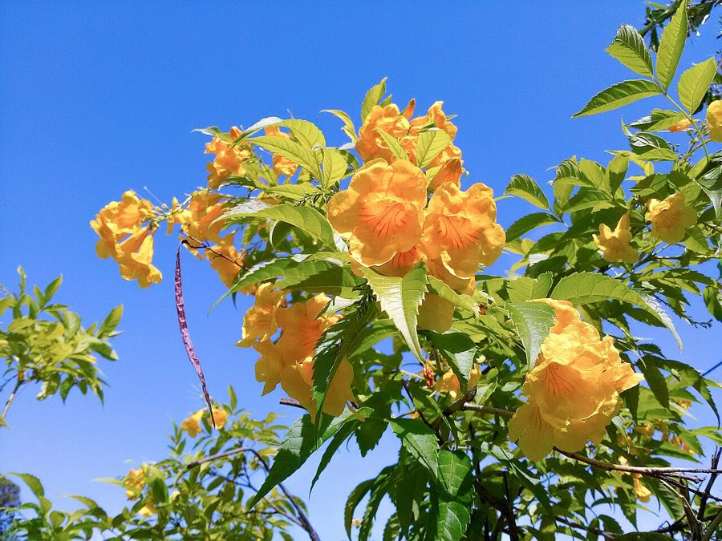

पीली घंटीYellow Bells
Tecoma stans · Bignoniaceae · FLR-0304

- Scientific name वैज्ञानिक नाम
- Tecoma stans (L.) Juss. ex Kunth
- Family कुल
- Bignoniaceae
- Hindi हिंदी
- पीली घंटी
- Local names स्थानीय नाम
- pili ghanti, peeli ghanti, yellow bells, tecoma
- Status here यहाँ की स्थिति
- naturalized
- Movement आवागमन
- Resident, here all year
- Known from कहाँ दर्ज
- Others have published records from the wider Awadh–Purvanchal plain, none yet from Basti–Ayodhya अवध–पूर्वांचल से दूसरों के प्रकाशित अभिलेख, बस्ती–अयोध्या से अभी नहीं
- IUCN IUCN
- not evaluated
- Review समीक्षा
- audited and independently read
When to look कब देखें
Present all year. साल भर मौजूद।
Uses and possibilities उपयोग और संभावनाएँ
Drawn from the documented uses in the profile below, where each is labelled traditional, current or a research lead. All uses →
Tell it apart from इनसे अलग पहचानें
पीली घंटी / Yellow Bells
Tecoma stans (L.) Juss. ex Kunth — Bignoniaceae
पीली घंटी — उष्ण क्षेत्रों में लगाई जाने वाली झाड़ी, जिसके चमकीले पीले, घंटे जैसे फूल दिसंबर से फरवरी में खिलते हैं। पूरा पौधा विषाक्त है, पर बाग़ों में इसकी सुंदरता के लिए लगाया जाता है। कहीं-कहीं यह अपने आप उगने लगा है। बीजों को पक्षी खाते हैं और दूर तक फैलाते हैं।
Quick Identification त्वरित पहचान
| Feature | Description |
|---|---|
| Size | Evergreen shrub 1–3 m tall, erect, much-branched |
| Leaves | Compound, pinnate, 15–25 cm long; 5–9 dark green leaflets with toothed margins |
| Flowers | Large, bright golden-yellow, tubular, bell-shaped, 4–6 cm long, in terminal clusters, November–February |
| Fruit | Long slender pod (silique) 20–30 cm, brown when dry, splitting to release many winged seeds |
| Bark | Grey-brown, smooth on young stems, becoming rough with age |
| The test | Bright yellow, five-lobed flowers in clusters; leaves are pinnate with many leaflets |
Field tip: Yellow Bells are grown in gardens and along roads for their spectacular winter flowers. Look for the bright yellow tubular flowers in clusters and the long, narrow brown seed pods in summer. The plant is evergreen and much-branched. Seeds are dispersed by wind and birds.
हिंदी — कैसे पहचानें: चमकीले पीले, घंटे जैसे फूल। पत्तियाँ कई छोटी पत्तियों की बनी होती हैं। लंबी, पतली, भूरी फलियाँ।
Morphology आकारिकी
Biometrics (cultivated shrubs in gardens):
| Measurement | Range |
|---|---|
| Height | 1–3 m |
| Leaf length | 15–25 cm |
| Leaflet length | 4–8 cm |
| Flower length | 4–6 cm |
| Flower diameter | 3–4 cm |
| Pod length | 20–30 cm |
Stem and branches: Erect, much-branched, quadrangular (square in cross-section) when young, becoming round and woody with age. Green when young, turning grey-brown.
Leaves: Opposite, compound, pinnate with an odd terminal leaflet. Leaflets 5–9, lanceolate, 4–8 cm long, dark green, with finely toothed margins, pubescent beneath.
Flowers: Large, very showy, bright golden-yellow, tubular with five spreading lobes, 4–6 cm long. Borne in terminal racemes. Fragrant. The corolla is thin and papery.
Fruit: A long, slender, compressed pod (silique), 20–30 cm long, green turning brown, splitting along the centre to release many flat, winged seeds.
Toxins: The entire plant contains anthraquinone glycosides and other toxic compounds; all parts are poisonous if ingested.
हिंदी: पत्तियाँ कई छोटी पत्तियों की बनी होती हैं। फूल बहुत सुंदर, पीले, घंटे जैसे। फलियाँ बहुत लंबी, पतली। सब कुछ जहरीला।
Behaviour & Ecology व्यवहार और पारिस्थितिकी
Yellow Bells is a tropical and subtropical shrub native to Mexico and Central America, widely cultivated in warm regions worldwide as an ornamental. In eastern UP it is planted in gardens and along roads for its spectacular winter flowers. It grows best in well-drained soils and is drought-tolerant once established. The flowers are attractive to bees and other insects. The winged seeds are wind-dispersed and also taken by birds, which has led to naturalization in some areas.
The plant has escaped cultivation in parts of India and is becoming semi-wild in disturbed areas. In eastern UP it is not yet aggressively invasive but bears watching as a potential problem.
हिंदी: गर्म क्षेत्रों में लगाया जाता है। सूखा सहन कर लेता है। फूलों पर मधुमक्खियाँ आती हैं। बीजों को पक्षी खाते हैं और दूर तक ले जाते हैं।
Life Cycle / Phenology जीवन चक्र
| Month / season | Event |
|---|---|
| November–February | Main flowering period in eastern UP |
| February–May | Fruit development and pod maturation |
| May–June | Pods dry and split; seeds dispersed by wind and birds |
| July–October | Vegetative growth, little or no flowering in eastern UP |
| 2–3 years from seed | First flowering |
The plant is evergreen or semi-deciduous, depending on temperature and moisture. Lifespan in cultivation is 20–30 years.
हिंदी: दिसंबर-फरवरी में फूल। गर्मी-बरसात में फली। 2-3 साल में फूल आता है।
Associated Species / Interactions संबंधित प्रजातियाँ
- Pollinators: Asian Honey Bee and other bees visit the flowers.
- Seed dispersal: Birds take the winged seeds.
- Garden companions: Often planted with Hibiscus, Crape Jasmine and other ornamental shrubs.
Pests and Diseases कीट और रोग
- Leaf-eating caterpillars and beetles, rarely damaging on mature plants.
- Powdery mildew in humid weather.
- No serious fungal diseases in well-drained settings.
Agricultural / Human Relevance कृषि प्रासंगिकता
Toxicity (documented use; not medical advice):
The entire plant is poisonous. All parts — leaf, flower, stem, pod, seed — contain anthraquinone glycosides and other toxic alkaloids. Ingestion can cause severe gastrointestinal distress. No part is safe to eat.
Today. Yellow Bells is grown as an ornamental for its spectacular winter flowers in gardens, parks, and along roads. It brightens the eastern UP landscape during the cool season when few other flowers bloom. The plant is cultivated, not wild.
Research direction (a lead, not a result). The spread of Yellow Bells as a naturalized plant in disturbed areas in India warrants monitoring, particularly in regions with warm winters and adequate moisture.
हिंदी: सब कुछ ज़हरीला है। खाया नहीं जाता। बाग़ों में सुंदरता के लिए लगाया जाता है। सर्दियों में चमकीले पीले फूल।
Expected Locally स्थानीय रूप से अपेक्षित
Not a field record. Written from published accounts for eastern Uttar Pradesh. No confirmed local sighting yet — if you have seen it, that is what the atlas needs.
अभी तक स्थानीय पुष्टि नहीं। यह विवरण प्रकाशित स्रोतों से है, किसी अवलोकन से नहीं।
GBIF holds published records from the wider Awadh–Purvanchal plain. Yellow Bells are to be expected as cultivated plants in temple gardens, ornamental plantings, and roadside settings in Basti and Ayodhya districts. The plant is not wild but has begun to naturalize in some disturbed areas. A first record would be a photograph showing the plant in a specific location.
Distribution वितरण
Global range: Native to Mexico and Central America; cultivated worldwide in warm regions.
In India: Widely cultivated in gardens and parks, particularly in peninsular India and warm regions.
In Uttar Pradesh: Cultivated as an ornamental in gardens and roads.
In Basti district / eastern UP: Ornamental plantings in gardens and roads; naturalization beginning in disturbed areas.
Research Questions शोध प्रश्न
- Where in your village or town are Yellow Bells planted, and how common are they? — Walk and map each location; note garden or roadside setting.
- When do they flower, and do they attract insects? — Observe a plant over several months; note which insects visit.
- Do the seeds fall and grow new plants? — Look under established plants for seedlings.
- Which birds, if any, eat the seeds? — Watch the plant during seed ripening; record bird visits.
- Is the plant spreading on its own, or only where planted? — Search disturbed areas for wild-looking plants.
Similar Species मिलती-जुलती प्रजातियाँ
| Species | How to tell apart | हिंदी |
|---|---|---|
| Kaner (Nerium oleander) | Leaves simple, narrow, opposite; flowers pink, white, red, with a crown; pod pairs, not long single pod | कनेर — सफ़ेद, गुलाबी फूल; सरल पत्तियाँ |
| trumpet vine (Campsis radicans) | Climber (not a shrub); orange-red flowers; compound leaves; aerial rootlets | तुरही फूल — चढ़ने वाली बेल |
| Tecomella (Tecomella undulata) | Desert shrub; smaller yellow flowers; xerophytic leaves; not cultivated in eastern UP | पीठवन — रेगिस्तान का पेड़ |
Field rule: A cultivated, much-branched shrub with compound, pinnate leaves and large bright golden-yellow, bell-shaped flowers in clusters, followed by very long slender brown pods, is Yellow Bells.
Taxonomy & Classification वर्गीकरण
Original description. Described by Carl Linnaeus in Species Plantarum (1753) as Bignonia stans. Later moved to the genus Tecoma by Justieu. The species epithet stans means "standing" in Latin.
Subspecies. Monotypic — no subspecies are currently recognised.
Family and order placement. Bignoniaceae, the trumpet flower family, in the order Lamiales. The genus Tecoma holds about a dozen species, mostly tropical.
Phylogenetic notes. Tecoma stans is closely related to Campsis and other bignoniaceous ornamentals. Molecular work places the genus within a clade of tropical trumpet flowers.
IUCN status rationale. Not evaluated. Widely cultivated; invasive potential in some regions globally. Locally it is only naturalized, not invasive.
Photo Gallery फोटो गैलरी
Photos needed आवश्यक फोटो
- [ ] Whole shrub in flower (December–February)
- [ ] Close-up of yellow, bell-shaped flowers
- [ ] Compound, pinnate leaves
- [ ] Long brown seed pods
- [ ] Seedlings and naturalized plants
No photos yet — add field photos to media/species/yellow_bells/ and run node scripts/sync_photos.js.
References संदर्भ
- Linnaeus, C. (1753). Species Plantarum, vol. 1, p. 622. Laurentii Salvii, Holmiae. [original description]
- Jussieu, A.L. de (1789). Genera Plantarum. Paris.
- Hooker, J.D. (1880). The Flora of British India, vol. 4. L. Reeve, London.
- Duthie, J.F. (1903). Flora of the Upper Gangetic Plain. Government Printing, Calcutta.
- Kirtikar, K.R. & Basu, B.D. (1935). Indian Medicinal Plants, 2nd ed., vol. 4. Lalit Mohan Basu, Allahabad.
- GBIF Occurrence Data — Tecoma stans, India (2026).
Source file: species/flora/shrubs/yellow_bells.md